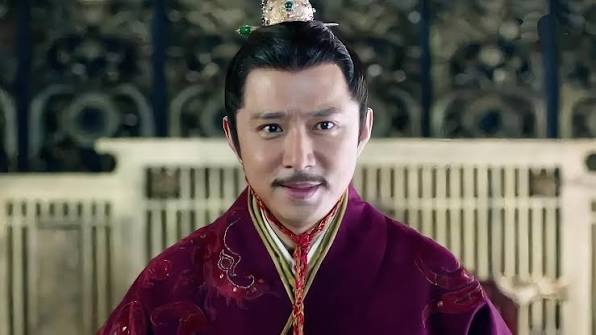

故事的轉折，
留待你選擇翻開。
這篇記事包含小說的重要事件與後續結果。
確認願意閱讀劇透後，再展開全文。
這篇記事包含劇透，點此展開全文
太子被廢
從私炮坊案後的自省，到東宮封禁，再到年底正式廢黜。蕭景宣退出儲位，朝中的競逐也隨之改變。

事件概述
太子蕭景宣的失勢，並非在同一場面內完成。小說先寫私炮坊案後的處分，再寫東宮被封禁，最後才於年底以正式旨意廢為獻王、遷謫獻州。自省、幽禁與正式廢黜，是這段故事中的三個不同階段。來源 E01 來源 E03 來源 E04
背景
沈追查出太子與戶部樓之敬設立私炮坊牟利，已經上摺請求查封。隨後私炮坊發生爆炸，造成大量死傷。事後，梁帝命太子遷居圭甲宮自省，不准參與朝事。此時他仍保有太子身分，尚未遭到正式廢黜。來源 E01
主要經過
梁帝臨時探望東宮
壽宴之後，梁帝想起太子與越貴妃近來的憔悴，臨時決定悄悄前往探望。東宮事先沒有得到消息，長信殿內仍有演樂。當時太皇太后喪期未滿半年，身為儲君與嫡系子孫，太子的行為違反國孝與家孝禮制。梁帝聽見樂聲已極為不悅，但原本仍打算退去。來源 E02
怨言被聽見，東宮遭封禁
就在梁帝準備離開時，殿內又傳出太子抱怨父皇的聲音。他不滿梁帝扶持譽王與自己相爭，並指責父皇無情多疑。梁帝聽見後震怒，拔出蒙摯的刀，在殿前圓柱留下刀痕，隨後離開。來源 E03
這場東宮驚變之後，梁帝要求封鎖當日消息，並以口諭禁止東宮人等出入，包括太子。此時東宮受到封禁，太子仍未正式遭到廢黜。來源 E03
年底正式廢黜
正式旨意直到年底才頒下。第四十三章記載，司天監奏報星象示警，梁帝據此稱太子無德，將蕭景宣廢為獻王，命他離開金陵、謫居獻州。同一道旨意又增加靖王兩顆王珠，使其與譽王同為七珠親王。來源 E04
直接結果
太子的退場沒有讓譽王直接取得儲位。譽王見到旨意後震怒；靖王地位的提高，也使朝中的競逐局面發生變化。後文寫到，太子黨官員擔憂未來受到清洗，同時留意靖王崛起對局勢的影響。來源 E04 來源 E05
文本依據
以下為介紹內容的核對位置，使用原始章名與段落編號。
- E01第二十八章〈驚天一震〉
私炮坊案的查辦、爆炸及太子遷居圭甲宮自省。
C028-P0032、C028-P0092 - E02第四十一章〈東宮驚變〉
梁帝臨時前往探望，發現喪期演樂。
C041-P0015、C041-P0017、C041-P0035、C041-P0036、C041-P0037、C041-P0038 - E03第四十一章〈東宮驚變〉
太子怨言被聽見、梁帝震怒，以及口諭封禁東宮。
C041-P0039、C041-P0040、C041-P0041、C041-P0042、C041-P0043、C041-P0044、C041-P0045、C041-P0046、C041-P0054、C041-P0055、C041-P0056、C041-P0057、C041-P0058 - E04第四十三章〈山雨欲來〉
年底正式廢太子為獻王、遷謫獻州，並增加靖王王珠。
C043-P0008、C043-P0009、C043-P0010、C043-P0011、C043-P0012、C043-P0013、C043-P0014、C043-P0015、C043-P0016、C043-P0017 - E05第四十六章〈一諾千金〉
太子被廢後，太子黨官員對朝局變化的反應。
C046-P0082